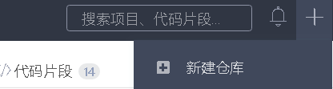
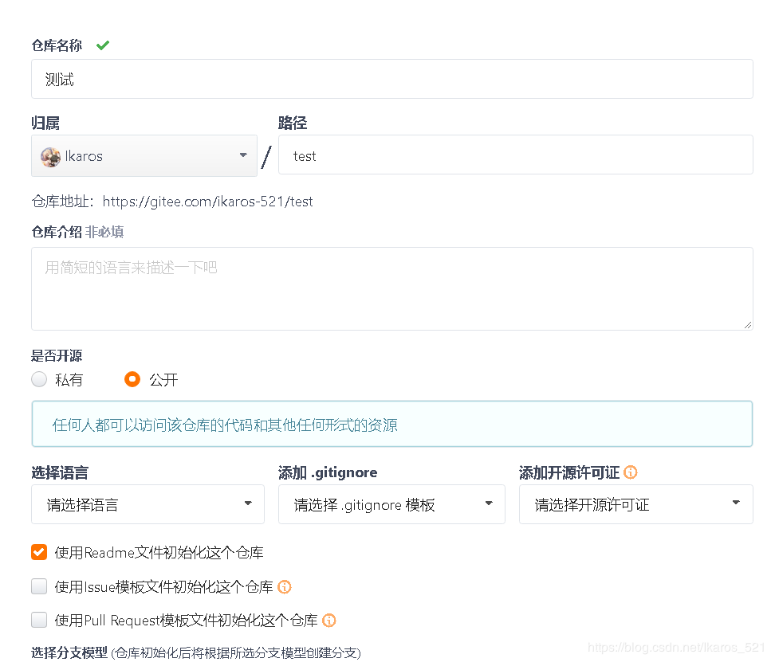
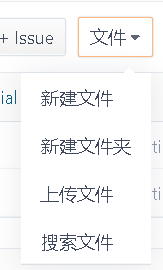
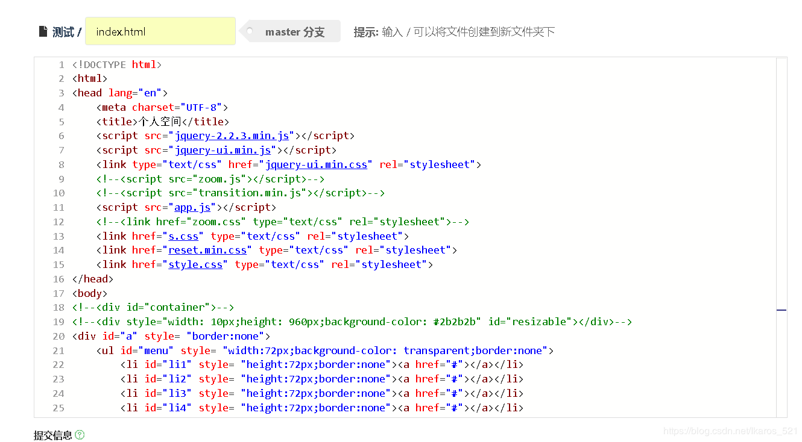
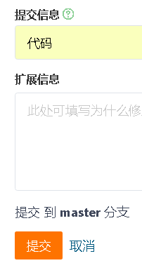
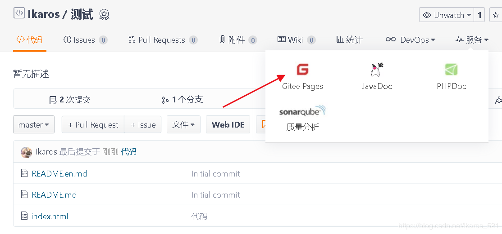
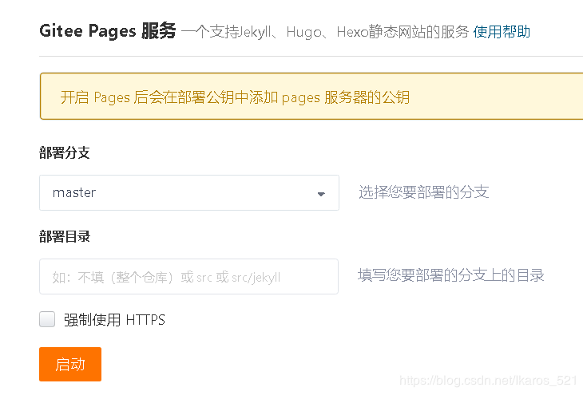
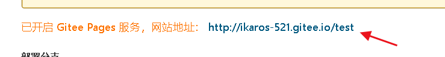
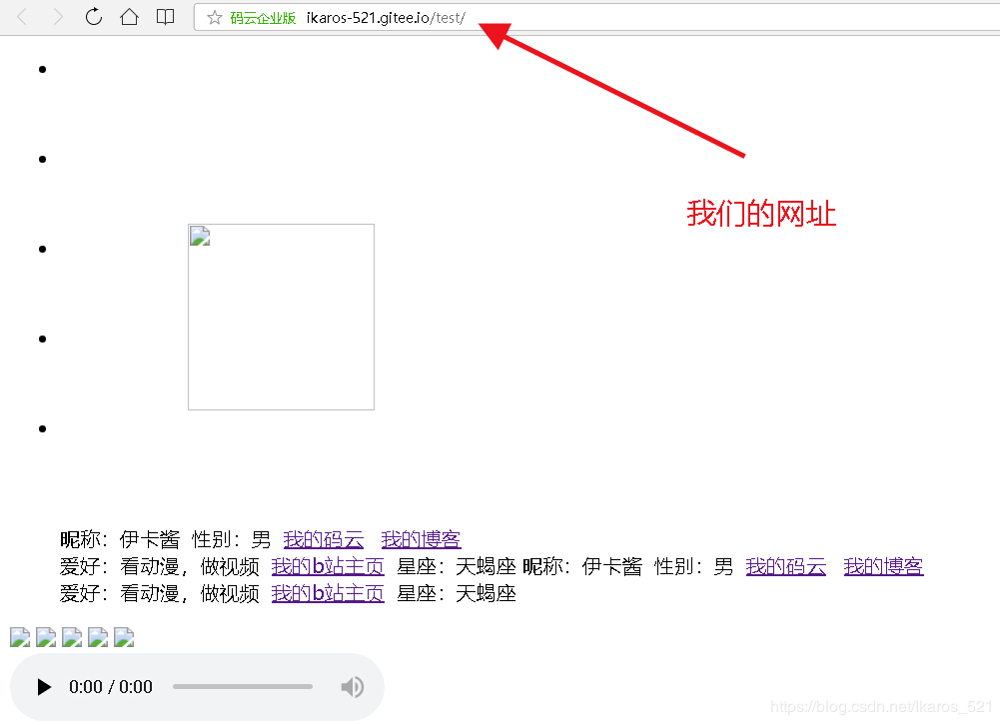
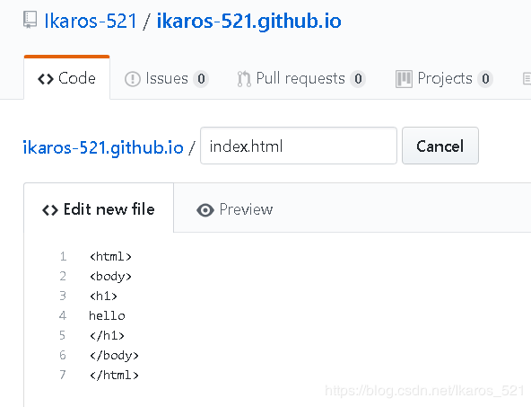

原文出处:本文由博客园博主Love丶伊卡洛斯提供。
原文连接:https://www.cnblogs.com/ikaros-521/p/11378206.html
原文连接:https://www.cnblogs.com/ikaros-521/p/11378206.html
视频链接：https://www.bilibili.com/video/av64294697
码云：
1、新建一个仓库 
路径名会影响你的个人网站的网址（自行修改），开源（公开），其他默认

我们点击创建 
2、进入仓库后，我们新建一个文件

3、文件名为index.html，再写入我们的html代码

然后“提交” 
4、文件添加完成后，我们点击“服务”->“Gitee Pages”

5、启动服务

6、启动完毕后，这个网址就是我们的个人网站的网址了。

7、我们点击网址进入看看

8、之后我们就可以上传其他文件，如css和js
网站加载可能不会很快，需要耐心等待，我搭建的网站：传送门
————————————————————————————————————————————————————-————
GitHub：
操作类似
注意：新建仓库时，仓库名是“你的GitHub的用户名.github.io” （用户名如果是大写，仓库名要改成小写）
进入仓库后，我们在网址后面加上/new/master，进入创建文件页面

之后就类似了，创建index.html文件

访问的网址是http://你的仓库名 我的就是（http://ikaros-521.github.io）
补充部分：
GitHub不创建io仓库也可以使用pages服务，参考 github 上如何直接预览仓库中的html，搭建自己的主页
创建io仓库后，以上服务就无法访问404
可以通过 在html的网址前面+ http://htmlpreview.github.io/?
不过似乎不快。。。
我已经在GitHub上搭建“博客”了，网址同上，可以参考。
主要使用的是hexo提供的一系列服务，以及 matery 的主题。
hexo的搭建参考博客：Hexo+Github: 个人博客网站搭建完全教程(看这篇就够了)
matery主题设置：Hexo博客主题之hexo-theme-matery的介绍 | 闪烁之狐
yilia主题设置参考博客：Hexo yilia 主题一揽子使用方案